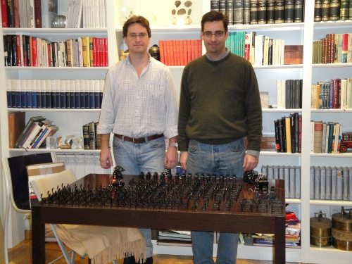
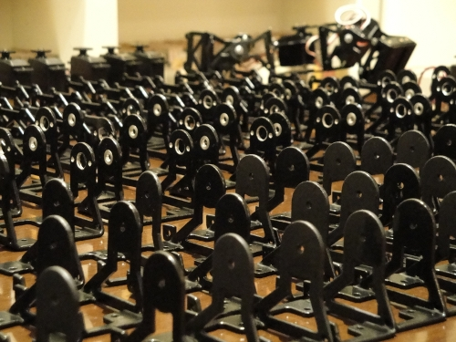
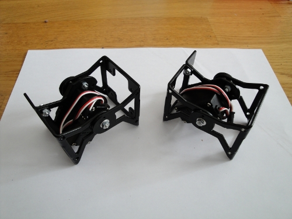

Ya nos han llegado las piezas para el montaje de 50 módulos MY1!!! (Lote nº1). Han quedado muy bien. Son muy ligeras y las están pintadas de negro. El montaje de los módulos es rápido y sencillo, perfecto para usarse en los talleres.

En la foto de arriba, se pueden ver las piezas en formación. En la de abajo, están dos módulos montados:

Este viernes, Andrés y yo estuvimos frikeando con los módulos y probamos algunas ideas muy interesantes. Construimos tres robots UNIMOD, formados por un módulo MY1 + Skycube + pilas. Los unimos para formar un gusano de 3 segmentos que se movía mediante oscilaciones independientes de cada uno de sus “unimods”.
Hay más fotos en el Álbum de los módulos MY1.
Estan genial Juan!!!. Me encantan!!!
Gracias. Tienes que verlos en vivo porque ganan mucho
Tenemos pendiente esa comida robótica 😉
Muy bueno, eso es lo que hace falta, lanzarse con la produccion en serie 😉
Joe, que envidia me dais!!!
Enviame unos cuantos que te los vendo por aqui y haces un robot famoso overseas!!!
Hola Mif!!!
Ahora es cuando viene lo divertido: tenemos los 50 módulos,, tenemos 50 Skycubes…. a parir robots modulares!!! Cuando vengas a España quedamos y te los enseñamos, que seguro que ya los tendremos muy avanzados
Hola Raul!
Gracias! Sí, para dar talleres es necesario pasar del prototipo a la producción. Ya hablaremos contigo para proponer un taller a los de Cosmocaixa 😉
Hola Juan.
Sois unos campeones, seguro que queda genial el curso, ya me contaréis donde y cuando.
Un saludo .;
Hola Fernando! Te mantendré informado. Con los alumnos de altas capacidades usaremos algunos de estos módulos 😉
Juan, eso esta hecho! voy a espana en Abril pocos dias para la Campus y luego ya en cuanto acabe en Mayo… a menos que me ofrezcan un curro o algo asi…
Me muero de ganas por verlo!